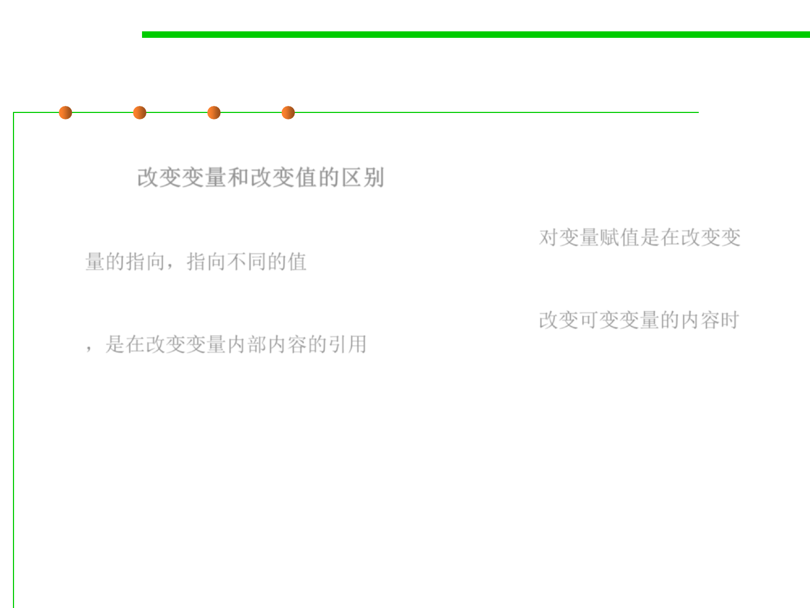

3.1 Data Type and Type Checking
Changing a variable or its value
▪ What’s the distinction between changing a variable and changing a
value? 改变变量和改变值的区别
– When you assign to a variable, you’re changing where the variable’s
arrow points. You can point it to a different value. 对变量赋值是在改变变
量的指向，指向不同的值
– When you assign to the contents of a mutable value – such as an array or
list – you’re changing references inside that value. 改变可变变量的内容时
，是在改变变量内部内容的引用
▪ Change is a necessary evil.
▪ Good programmers avoid things that change, because they may
change unexpectedly.